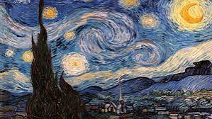
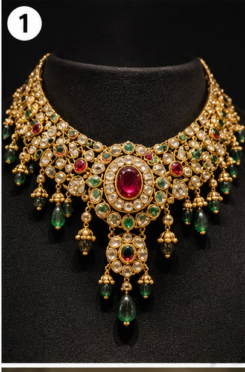
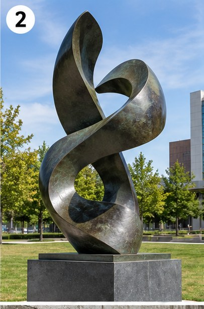
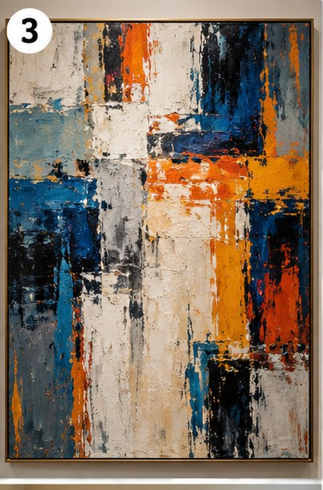
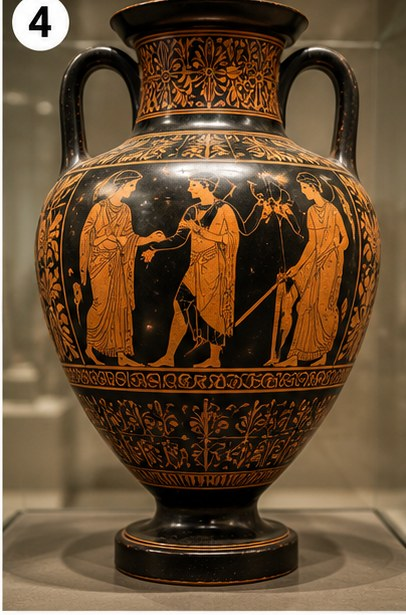
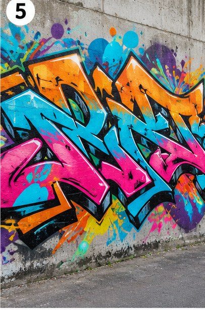
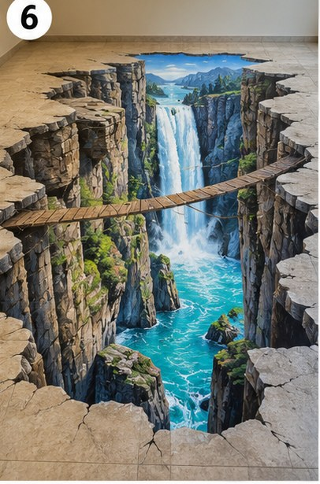

Wordlist — Art and Aesthetics
These words come up throughout today's tasks on art.
| word / phrase | meaning | example |
|---|---|---|
| aesthetic | relating to beauty or the appreciation of beauty | The building's aesthetic appeal comes from its simplicity. |
| abstract | (of art) not attempting to represent a real object or scene | She prefers abstract paintings to realistic portraits. |
| medium | the material or method an artist uses (paint, clay, etc.) | Watercolour is a difficult medium to master. |
| provocative | intended to cause strong reactions, often through controversy | The exhibition included several deliberately provocative pieces. |
| authenticity | the quality of being genuine or original | Critics questioned the authenticity of the signature. |
| renowned | famous and respected | He is a renowned sculptor with work in major museums. |
| commission (v.) | to formally ask someone to create a piece of work | The city commissioned a new mural for the square. |
| subjective | based on personal opinion rather than fact | Whether something is beautiful is largely subjective. |
| installation | a piece of art designed to fill or transform a space | The gallery's newest installation fills an entire room. |
| vandalism | deliberate damage to property | Some still view graffiti as vandalism rather than art. |
Match each word to its definition.
Read this short text. All ten words from the table are highlighted.
Whether a piece of art succeeds is often entirely subjective — one viewer's aesthetic pleasure is another's confusion. A renowned gallery might commission a large installation from an artist working in an unusual medium, deliberately provocative in its message. Some pieces raise real questions of authenticity — is it genuinely the artist's own work? — while others, like street art, are still dismissed by some as mere vandalism rather than a legitimate art form, even when the work is abstract and carefully composed.
True or false?
1. Something subjective is based on objective, measurable fact.
2. Abstract art attempts to represent a real object or scene as accurately as possible.
3. Vandalism refers to deliberate damage to property.
4. If a gallery commissions a work, they ask an artist to create it.
5. A renowned artist is one nobody has ever heard of.
Article — What Can Be Considered Art?
Read the article below, then answer the questions that follow.

The Starry Night, Vincent van Gogh (1889)
For centuries, the question of what qualifies as "art" seemed relatively settled: paintings, sculptures, and later photographs, created with evident skill and intended for aesthetic contemplation. That consensus began to unravel in 1917, when the French artist Marcel Duchamp submitted a standard, mass-produced urinal to an art exhibition, signed with a fictitious name. Titled "Fountain", the piece was rejected by the exhibition committee, yet it went on to become one of the most influential and widely discussed works of the twentieth century. Duchamp's point was provocative but simple: if an artist designates an object as art, and invites the public to consider it as such, does the object's origin or craftsmanship still matter?
This question has only grown more pressing since. Graffiti, once treated almost exclusively as vandalism, is now exhibited in major museums, and artists working in that tradition, such as Banksy, can command auction prices rivalling those of long-established painters. Street art occupies an unusual position: created illegally, often without the property owner's consent, yet increasingly valued, preserved, and even commissioned by the same civic authorities who once had it removed.
Abstract art poses a related but distinct challenge. A painting consisting of blocks of colour, with no recognisable subject, image, or narrative, asks viewers to abandon the assumption that art must represent something. Defenders argue that abstraction communicates through colour, form, and composition alone, in much the same way music communicates without words; critics counter that, without any technical benchmark to judge the work against, almost anything could be presented as art, regardless of the effort or intention behind it.
Digital technology has reopened the debate in a new form. Artificial intelligence can now generate images, in seconds, that closely imitate the style of established painters, based on nothing more than a short written description. Some argue that the human decisions behind the prompt itself constitute a legitimate creative act; others maintain that art fundamentally requires a human hand and a lived human experience behind it, and that no algorithm, however sophisticated, can genuinely satisfy that requirement.
Perhaps the most honest answer is that art has never had a single, stable definition, and that each generation renegotiates its boundaries in response to new technologies, materials, and social attitudes. What one era dismisses as vandalism, or gimmick, or a machine's imitation, a later era may come to regard as a defining artistic achievement of its time.
Questions 1–5. Do the following statements agree with the information in the passage?
1. Duchamp's "Fountain" was accepted immediately by the exhibition committee.
2. Graffiti has always been treated as a serious art form by museums.
3. Banksy's work has sold for very high prices at auction.
4. All abstract artists agree on a fixed set of technical standards for their work.
5. According to the passage, every generation has defined art in exactly the same way.
Questions 6–13. Choose the correct answer.
6. What point was Duchamp making with "Fountain"?
7. How has society's attitude toward graffiti changed, according to the passage?
8. What is unusual about street art's position, according to the passage?
9. What do defenders of abstract art argue?
10. What do critics of abstract art suggest?
11. What can AI now do, according to the passage?
12. What do some people argue about AI-generated art?
13. What is the passage's overall conclusion about defining art?
Write a formal summary of the article (about 150 words).
Now record a spoken summary of the article.
In your own words, summarise the main points for at least one minute.
⏱ This recording must be at least 1 minute long, or the platform won't let you move on — you'll be able to record it again if it comes out too short.
Types of Art
Match each picture to the correct type of art.

1

2

3

4

5

6
Speaking Part 1 — Art
Record your answers to these typical Speaking Part 1 questions.
Reading — The History of the Poster
A full, timed-style IELTS reading test. Read the passage on the left and answer the 13 questions on the right.
Language focus — vocabulary from this passage
| word / phrase | meaning |
|---|---|
| broadside | an early poster, printed on one side only |
| crudely | done roughly, without much skill or finesse |
| conglomeration | a mixed collection of different things |
| nuance | a very small, subtle difference or detail |
| predominant | the most common or noticeable |
| dogmatic | too certain that your own beliefs are correct, without allowing debate |
Complete these sentences with a word from the box above.
1. His teaching style was quite , leaving little room for other opinions.
2. The two colours were almost identical, differing only by a slight .
3. Blue became the colour used in the campaign's posters.
4. The shop window display was a strange of styles and objects.
Grammar note — passive voice for historical processes
Like most historical writing, this passage uses the passive voice heavily to focus on the process or invention itself, not who specifically carried it out: "the first posters were known as...", "lithography...invented by Alois Senefelder", "the first poster shows were held in Great Britain and Italy in 1894".
Writing task
Some people think that street advertising, such as posters and billboards, should be banned in cities. To what extent do you agree or disagree? Write at least 250 words.
Reading — A Brief History of Photography in Advertising
Another full, timed-style IELTS reading test. Read the passage and answer the 13 questions.
Language focus — vocabulary from this passage
| word / phrase | meaning |
|---|---|
| benefactor | someone or something that gives money or support |
| pictorial | relating to or expressed through pictures |
| modernist | relating to modern styles and ideas, breaking from tradition |
| vantage point | a position that gives a particular view of something |
| notorious | famous for something bad or controversial |
| glamorise | to make something seem more attractive or exciting than it really is |
Complete these sentences with a word from the box above.
1. Critics accused the film of trying to a dangerous lifestyle.
2. From this unusual , you could see the entire city below.
3. The museum relies heavily on a single wealthy .
4. The scandal made him almost overnight.
Grammar note — participle clauses
Notice how the passage compresses information using participle clauses instead of full relative clauses, e.g. "photographers working for the business could be more ambitious" (= who were working), and "newer representations of things like gender roles took their place alongside traditional ones." This is a common feature of concise academic and journalistic writing.
Writing task
Advertising today often uses images that some people find shocking or offensive. Do the benefits of this kind of advertising outweigh the drawbacks? Write at least 250 words.